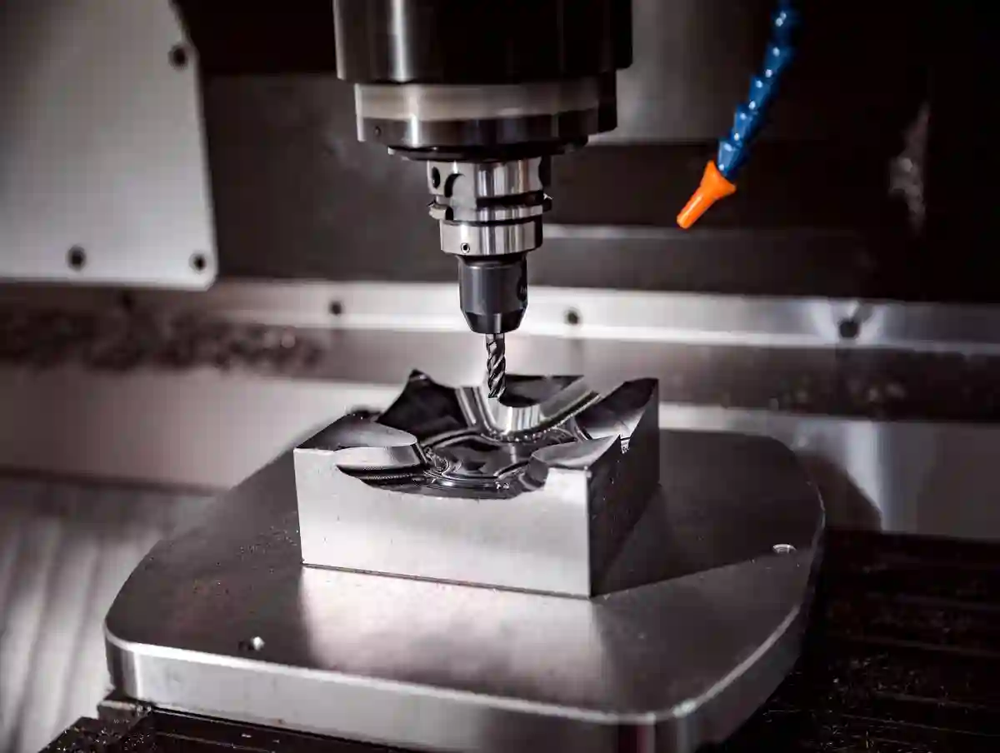
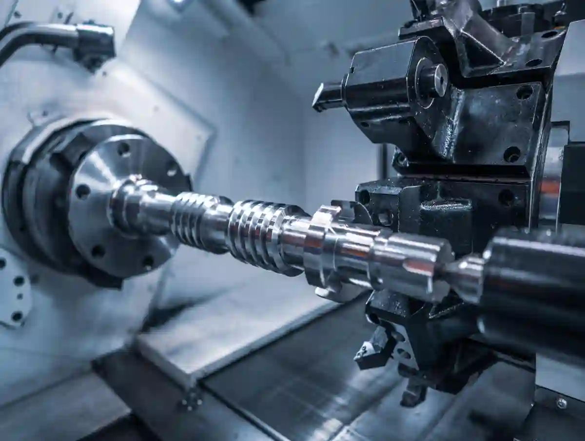
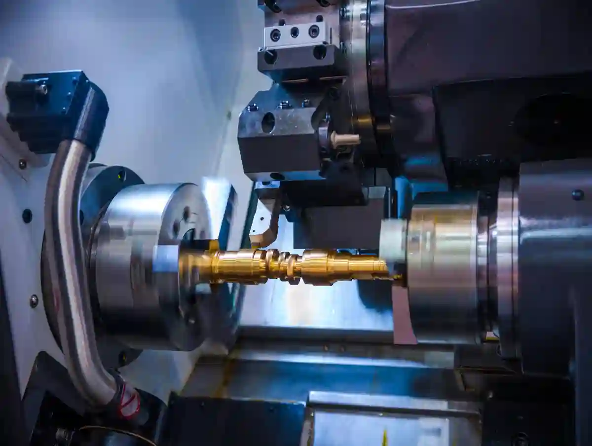
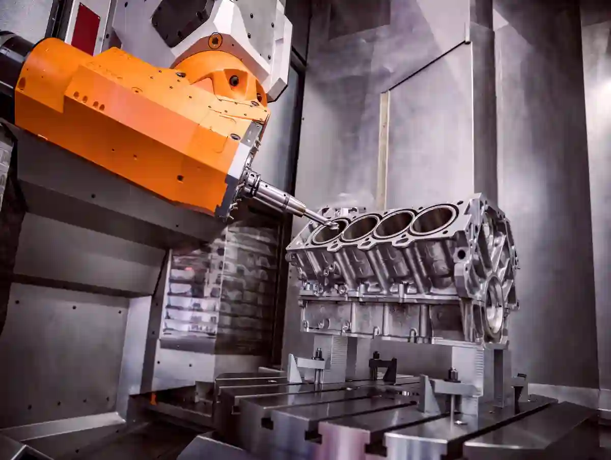
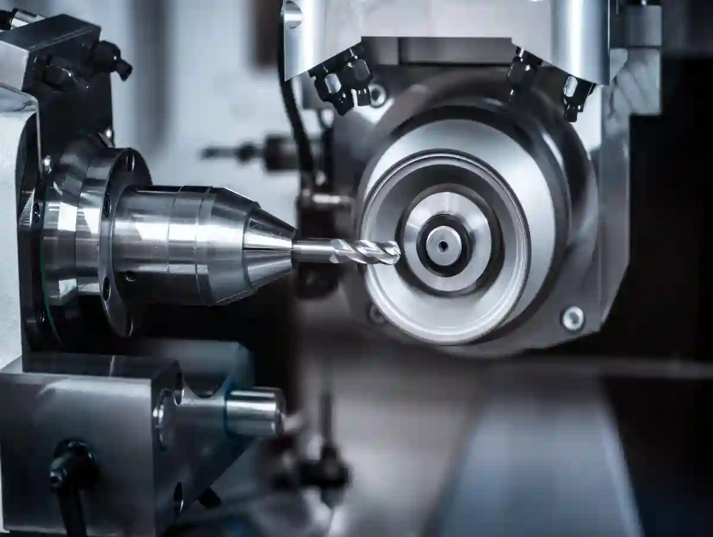

Az Adet CNC İmalat ve Prototip Satın Alma Rehberi
Az adet cnc imalat, çoğu satın alma ekibinin ilk bakışta yanlış okuduğu üretim başlıklarından biridir. Çünkü düşük miktarlı işlerde odak çoğu zaman yalnızca birim fiyata kayar. Oysa teknik açıdan bakıldığında burada satın alınan şey sadece “parça” değildir; doğrulama, öğrenme, revizyon kabiliyeti ve seri üretim öncesi risk azaltımıdır. Bu yüzden az adet cnc imalat kararı, klasik fason sipariş mantığıyla değil; mühendislik, kalite ve zaman yönetimi birlikte değerlendirilerek verilmelidir.
Az Adet CNC İmalat Nedir, Neyi Kapsar?
Az adet cnc imalat; tek parça, birkaç adet numune, fonksiyon testi için kısa lot veya seri öncesi kontrollü küçük parti üretimlerini kapsar. Bu yapı içinde numune parça imalatı, ilk doğrulama parçalarını; prototip cnc parça üretimi, tasarımın fiziksel karşılığını; küçük seri cnc üretim ise doğrulanmış tasarımın sınırlı fakat tekrar edilebilir üretimini ifade eder. Her biri aynı başlığın altında görünse de satın alma kriterleri aynı değildir.
Bu ayrımı daha detaylı okumak isterseniz, Düşük Adet CNC Üretim: Avantajlar, Sınırlamalar ve Kullanım Alanları yaklaşımı konuya daha geniş bir çerçeve sunar.
Prototip ile Numune Arasındaki Fark
Birçok firmada prototip ve numune aynı anlamda kullanılır. Ancak teknik tarafta fark nettir. Prototip; ölçü, fonksiyon, montaj, dayanım veya kullanım senaryosunu test etmek için üretilir. Numune ise çoğu zaman müşteri onayı, görsel kontrol veya ilk üretim teyidi için değerlendirilir. Yani prototip öğrenme üretimidir; numune ise onay üretimidir. Bu ayrım yapılmadığında, teklif süreci daha başta yanlış varsayımlarla başlar.

Düşük Adet Her Zaman Düşük Karmaşıklık Demek Değildir
Sipariş miktarının düşük olması, işin kolay olduğu anlamına gelmez. Tam tersine düşük adet cnc üretim ve prototip projelerinde toleranslar daha kritik, değişiklik oranı daha yüksek ve teknik iletişim daha yoğun olabilir. Çünkü bu aşama, henüz “sabitlenmiş üretim” değil, “karar üreten üretim” aşamasıdır. Bu nedenle satın alma ekipleri, teklifleri yalnızca adet ve malzemeye göre değil; revizyon olasılığına, ölçüm gereksinimine ve proses belirsizliğine göre de okumalıdır.
Az Adet Üretimde Satın Alma Perspektifi Neden Farklıdır?
Seri üretimde temel soru genellikle şudur: “Bunu kaça üretirsin?” Oysa az adet cnc imalat tarafında doğru soru farklıdır: “Bu parçayı hangi varsayımlarla, hangi riskleri yöneterek, hangi doğrulama seviyesinde üreteceksin?” Bu değişim önemlidir; çünkü prototip ve düşük adet siparişlerde maliyetin büyük kısmı malzemeden değil, hazırlık ve düşünme işinden gelir.
Bu noktada, CNC İmalat Rehberi içinde yer alan diğer teknik içerikler de teklif, tolerans ve proses değerlendirmesini daha sistematik yapmanıza yardımcı olur.
Teklifte Saklı Kalan Gerçek Maliyet Kalemleri
Bir prototip siparişi fiyatlandırılırken yalnızca talaş kaldırma süresi belirleyici değildir. Teknik resim inceleme, tolerans yorumlama, takım seçimi, bağlama stratejisi, CAM hazırlığı, ilk parça ölçümü, gerekiyorsa revizyon ve yeniden işleme gibi kalemler doğrudan maliyeti etkiler. Bu yüzden prototip üretim maliyetleri çoğu zaman “parça küçük, neden pahalı?” sorusuna maruz kalır. Oysa maliyetin ana gövdesi çoğu zaman adet değil, hazırlıktır.
En Ucuz Teklif Neden En Riskli Teklif Olabilir?
Az adet işlerde yanlış tedarikçi seçimi, büyük seri hatasına göre daha görünmez ama daha yıkıcı olabilir. Çünkü hatalı prototip, yanlış tasarım kararını doğruymuş gibi gösterebilir. Bu da sonraki kalıp yatırımı, saha testi veya montaj planını yanlış temele oturtur. Satın alma açısından esas risk, pahalı parça almak değil; yanlış öğrenme satın almaktır.
Hangi Projelerde Az Adet CNC İmalat Doğru Modeldir?
Ar-ge için cnc üretim, yeni ürün geliştirme çalışmaları, saha testi gereken mekanik parçalar, yedek parça doğrulama, montaj fikstürü geliştirme, proses iyileştirme çalışmaları ve yatırım öncesi işlev denemelerinde doğru modeldir. Özellikle gerçek malzeme ile test isteniyorsa, CNC prototipleme birçok alternatif yönteme göre daha doğru veri üretir.
Bu yaklaşımın kurumsal düzeyde de karşılığı vardır; özellikle KOSGEB Ar-Ge, Ür-Ge ve İnovasyon Destek Programı kapsamında prototip ve geliştirme odaklı çalışmaların stratejik değeri açık biçimde görülür.
Gerçek Malzemeyle Test Gereken Senaryolar
Bir parçanın yalnızca geometrisini görmek yetmez; çalışırken nasıl davrandığını görmek gerekir. Eğer parça alüminyum, paslanmaz, takım çeliği ya da mühendislik plastiği ile gerçek kullanım koşuluna yakın test edilecekse, prototip cnc parça üretimi güçlü bir seçenektir. Çünkü burada amaç sadece şekil üretmek değil; malzeme davranışını, yüzey sonucunu, montaj uyumunu ve işlevsel toleransı görmek olur.
Prototip CNC Parça Üretimi Süreci Nasıl Okunmalı?
Prototip cnc parça üretimi süreci, çizim gönderip parça beklemek kadar basit değildir. İyi bir tedarikçi bu süreci en az beş filtreden geçirir: teknik veri kontrolü, üretilebilirlik analizi, kritik ölçü ayrıştırma, ölçüm planı ve revizyon senaryosu. Satın alma tarafının görevi ise teklif istemeden önce bu filtrelerin çalışıp çalışmadığını anlamaktır.
Sürecin teknik akışını daha geniş okumak için Prototip Parça Üretimi Nedir? Tasarımdan Üretime Süreç Rehberi içeriği de bu başlığı destekleyen doğal bir tamamlayıcıdır.
Teknik Veri Kalitesi İlk Fiyatı Doğrudan Etkiler
STEP, SAT veya teknik resim dosyası var diye veri tamamlanmış sayılmaz. Tolerans notları eksikse, yüzey beklentisi belirsizse, referans yüzey mantığı oturmamışsa veya malzeme standardı açık değilse üretici fiyatı ya şişirir ya da varsayım yapar. Her iki durum da risklidir. Bu nedenle numune parça imalatı öncesinde veri kalitesi mutlaka kontrol edilmelidir.

Teklif Öncesi Zorunlu Veri Listesi
Malzeme standardı, kritik ölçüler, genel tolerans, yüzey kalitesi, kaplama/ısıl işlem ihtiyacı, adet, teslim beklentisi, kullanım amacı, varsa montaj referansları ve test senaryosu. Bu bilgiler eksikse hızlı teklif alınabilir; ama doğru teklif alınamaz.
DFM Mantığı Olmadan Prototip Sağlıklı Yürümez
Tasarım doğrusu ile imalat doğrusu her zaman aynı değildir. Parça teknik olarak çizilebilir ama ekonomik, tekrarlanabilir veya güvenli biçimde işlenemeyebilir. Bu yüzden düşük adet cnc üretim ve prototip süreçlerinde DFM kontrolü kritik hale gelir. Dar iç radyüs, gereksiz keskin köşeler, erişimi zor kanallar, ölçü referansını bozan tasarım kararları ve gereksiz dar toleranslar ilk maliyet arttırıcı unsurlardır.
Kritik Ölçü Ayrımı Yapılmadan Satın Alma Sağlıklı Olmaz
Her ölçü kritik değildir. Ancak kritik ölçülerin hangileri olduğu belirtilmezse, tedarikçi ya her yere aynı hassasiyeti uygular ve fiyat yükselir ya da gerçekten önemli bölgeleri sıradan ölçü gibi işler. Bu nedenle az adet cnc imalat siparişinde “bu yüzey yataklama için kritik”, “şu delik montaj referansı”, “bu paralellik fonksiyonu etkiliyor” gibi notlar işin kalitesini ciddi biçimde değiştirir.
Küçük Seri CNC Üretim ile Prototip Arasında Geçiş Nasıl Kurulur?
Küçük seri cnc üretim, prototipin bir sonraki mantıksal adımıdır; fakat otomatik geçiş değildir. Prototipte “çalıştı” sonucu almak, küçük seride “aynı kaliteyi tekrarlı verir” anlamına gelmez. Burada proses stabilitesi, bağlama tekrar edilebilirliği, takım ömrü, operatör standardı ve ölçüm rutini devreye girer.
Prototipte Kabul Edilen Elle Müdahale, Küçük Seride Risk Olabilir
İlk parçayı yetiştirmek için elle yapılan küçük düzeltmeler, operatör sezgisiyle çözülen bağlama sorunları veya tek parçaya özel ekstra ölçüm rutini prototipte tolere edilebilir. Fakat küçük seri cnc üretim aşamasında bunlar sistemsizliğe dönüşür. Satın alma ekibi şu soruyu sormalıdır: “Bu parça ilk örnekte çıktı; peki 20. parçada da aynı sonucu verecek mi?”
Küçük Seri İçin Sorulması Gereken 5 Teknik Soru
- Operasyon sırası sabit mi?
- Kritik yüzeyler için referans düzeni net mi?
- Ölçüm sıklığı belirlenmiş mi?
- Takım aşınmasına karşı kontrol planı var mı?
- Revizyon geldiğinde eski program ve yeni versiyon ayrımı yönetilebiliyor mu?
Bu soruların cevabı yoksa teklif uygun görünse bile sürdürülebilir değildir.
Ar-Ge İçin CNC Üretim Neden Ayrı Değerlendirilmelidir?
Ar-ge için cnc üretim projeleri klasik satın alma gibi yönetilirse iletişim kopar. Çünkü Ar-Ge projelerinde hedef çoğu zaman “hemen en düşük maliyet” değil, “en hızlı doğru öğrenme”dir. Bu projelerde tedarikçi, yalnızca üretici değil; üretilebilirlik yorumcusu gibi çalışmalıdır.
Özellikle geliştirme odaklı projelerde, Prototip ve Ar-Ge yaklaşımı, üretimin yalnızca parça imalatı değil doğrulama süreci olarak ele alınmasını sağlar. Benzer şekilde, TÜBİTAK tarafında da prototip geliştirme, süreç iyileştirme ve doğrulama odaklı üretim yaklaşımı Ar-Ge ekosisteminin temel unsurları arasında yer alır.
Ar-Ge Projesinde İdeal Tedarikçi Profili
Bu tür projelerde ideal tedarikçi; çizimi aynen işleyen değil, teknik niyeti okuyabilen taraftır. Malzeme alternatifi önerir, işleme sırası konusunda uyarır, toleransın gereksiz sıkı olduğu yerleri fark eder, test için gerçekten kritik bölgeleri ayrıştırır. Yani üretimi “sipariş kapatma” gibi değil, “veri üretme” gibi görür.
Prototip Üretim Maliyetleri Nasıl Doğru Yorumlanır?
Prototip üretim maliyetleri, seri üretim mantığıyla değerlendirildiğinde çoğu zaman pahalı görünür. Ancak burada maliyetin anlamı farklıdır. Prototipte satın alınan şey yalnızca işlenmiş malzeme değil; teknik doğrulama, olası hataların erken yakalanması ve sonraki fazların daha güvenli ilerlemesidir.
Bu nedenle prototip yatırımı yalnızca kısa vadeli parça maliyeti olarak değil, Ar-Ge ve inovasyon odağında değer üreten bir doğrulama adımı olarak değerlendirilmelidir.
Birim Fiyat Neden Yükselir?
Adet azaldıkça sabit hazırlık maliyeti daha az parçaya bölünür. CAM hazırlığı, bağlama kurgusu, takım ayarı, ilk parça ölçümü ve olası revizyon yükü aynı kalabilir; fakat bunlar tek veya birkaç parçaya yayılır. Bu yüzden az adet cnc imalat projelerinde birim fiyat yüksek olabilir. Bu durum verimsizlik göstergesi değil, maliyet yapısının doğasıdır.

Maliyet Düşürmenin Doğru ve Yanlış Yolları
Maliyeti düşürmenin yanlış yolu, körlemesine tolerans gevşetmek veya ölçüm adımını çıkarmaktır. Doğru yol ise kritik olmayan yüzeyleri serbestleştirmek, gereksiz ikincil operasyonları kaldırmak, malzeme standardını ihtiyaç kadar seçmek ve revizyon ihtimali yüksek bölgeleri prototip mantığına göre yeniden tasarlamaktır. Bu nedenle satın alma ekibi “daha ucuz teklif” yerine “aynı öğrenmeyi daha verimli nasıl alırım?” sorusuna odaklanmalıdır.
Maliyet Kalemlerini Şeffaf İsteyin
İyi bir teklif, sadece toplam rakam vermez. Mümkünse malzeme, işleme, ölçüm, ikincil operasyon, yüzey işlemi ve lojistik kalemlerini görünür kılar. Bu şeffaflık, hem karşılaştırmayı kolaylaştırır hem de sonradan çıkacak sürpriz revizyon maliyetlerini azaltır.
Numune Parça İmalatında Kalite ve Ölçüm Nasıl Kurgulanmalı?
Numune parça imalatı aşamasında kalite kontrol, “parça bitti mi ölçeriz” şeklinde ele alınmamalıdır. Özellikle dar toleranslı veya montaj ilişkisi olan parçalarda ara kontrol yaklaşımı kritik olur. Çünkü hatayı finalde görmek, numuneyi iptal etmek anlamına gelebilir.
Ölçüm Planı Teklif Kadar Önemlidir
Satın alma ekiplerinin sık atladığı konu şudur: ölçüm yöntemi. Kumpasla bakılabilecek ölçü ile hassas cihaz gerektiren ölçü aynı kategori değildir. Parça geometrisine göre hangi yüzeyin nasıl doğrulanacağı teklif aşamasında konuşulmalıdır. AYMAKSAN, site yapısında kalite kontrol ve ölçüm hizmetlerini ayrı bir üretim kabiliyeti olarak konumluyor; bu da prototip ve düşük adet işlerde önemli bir güven sinyalidir.
Ölçüm Raporu Her Parçada Gerekli mi?
Hayır. Her projede tam raporlama zorunlu değildir. Ancak kritik delik merkezi, yataklama yüzeyi, eşmerkezlilik, paralellik, yüzey kalitesi veya montaj referansı etkileyen ölçüler için raporlanabilir kontrol istenmelidir. Aksi halde prototipten alınan öğrenme eksik kalır.
Rapor İstenecek Tipik Özellikler
İlk parça onayı, fonksiyon testi, müşteri numunesi, dış doğrulama gerektiren projeler, iç kalite kapısı olan firmalar, Ar-Ge validasyonu ve küçük seri geçişi öncesi kontrol.
Teslim Süresi Nasıl Yönetilmeli?
Az adet işlerde en sık yapılan hata, teslim beklentisini gerçek dışı kurmaktır. Teknik resim eksik, malzeme belirsiz, tolerans yorumu açık ama “acil” notu düşülmüş dosyalar, hızlı değil; gecikmeye açık projelerdir. Hız, ancak veri netse çalışır. Bu yüzden düşük adet cnc üretim ve prototip süreçlerinde süre hedefi; teknik açıklık, malzeme erişimi ve ölçüm gereksinimi ile birlikte değerlendirilmelidir.
Hızlı Teslim İçin Satın Almanın Yapması Gerekenler
Dosyayı tam gönderin. Kritik ölçüleri işaretleyin. Revizyon kodunu net yazın. Numune onayı mı, saha testi mi, montaj mı olduğunu belirtin. Gerekirse “önce kaba numune, sonra final numune” aşaması planlayın. En önemlisi, proje amacını söyleyin. Parçanın ne iş yaptığı bilinince, üretim öncelikleri daha doğru kurgulanır.
Tedarikçi Seçiminde Hangi Teknik Kriterler Önceliklidir?
Az adet cnc imalat için tedarikçi seçerken yalnızca makine listesine bakmak yeterli değildir. Esas olan, o altyapının prototip ve düşük adet iş mantığıyla nasıl kullanıldığıdır. AYMAKSAN’ın görünür hizmet yapısında CNC tornalama, CNC frezeleme, kalite kontrol, prototip ve Ar-Ge desteği ile makine parkı aynı ekosistem içinde sunuluyor; bu, proje bazlı işlerde önemli bir avantajdır. Makine parkı görünürlüğünde DAHLIH MCV-1450, PUMA 280L, TOS SUI 50 ve SB-20R Tip G gibi ekipmanlar da yer alıyor.
Makine Parkı Tek Başına Yeterli Değildir
Küçük çap, uzun mil, karmaşık prizmatik geometri, delik-havşa kombinasyonu, ince duvarlı yapı veya yüzey hassasiyeti farklı işleme stratejileri gerektirir. Bu nedenle satın alma tarafı “hangi makineniz var?” sorusunun yanına “bu parçayı hangi sıra ile işleyeceksiniz?” sorusunu da eklemelidir.
Bu tür projelerde proses esnekliği ve operasyon uyumu açısından Özel Talaşlı İmalat yaklaşımı da satın alma kararını destekleyen önemli bir referans oluşturur.

Entegre Hizmet Modeli Neden Avantajdır?
Prototip ve düşük adet işlerde parça çoğu zaman tek operasyondan ibaret olmaz. Frezeleme sonrası torna, işleme sonrası ölçüm, bazen kaynak veya montaj uyumluluğu gerekir. Bu yüzden özel talaşlı imalat, kalite kontrol ve prototip desteğinin tek çatı altında olması zaman kaybını azaltır. AYMAKSAN’ın site yapısında bu hizmetlerin entegre sunulması, tedarik zinciri kırılmalarını azaltabilecek bir yapı gösteriyor.
Revizyon ve Değişiklik Yönetimi Nasıl Kurulmalı?
Prototip projelerinde revizyon istisna değil, sürecin parçasıdır. Bu nedenle tedarikçi seçiminde en kritik başlıklardan biri değişiklik yönetimidir. Revizyon geldiğinde program nasıl ayrılıyor, eski ve yeni dosya nasıl izleniyor, numune etiketi nasıl güncelleniyor, yanlış versiyon üretimi nasıl önleniyor? Bunlar konuşulmadan teklif tamamlanmış sayılmaz.
Dosya Adı Değil Versiyon Disiplini
“Son”, “son2”, “revize”, “nihai” gibi dosya isimleri profesyonel revizyon yönetimi değildir. Revizyon harfi/numarası, tarih, değişiklik notu ve etkilediği yüzeylerin açık şekilde yönetilmesi gerekir. Özellikle ar-ge için cnc üretim projelerinde bu disiplin, hem maliyeti hem süreyi hem de güveni doğrudan etkiler.
Revizyonun Fiyata Etkisi Başta Konuşulmalı
Bir revizyonun fiyatı etkileyip etkilemeyeceği, değişikliğin nerede olduğuna bağlıdır. Sadece bir pah kırılması ile tüm bağlama mantığını değiştiren revizyon aynı değildir. Bu nedenle satın alma ekibi, “hangi tür değişiklik yeni teklif gerektirir?” sorusunu baştan sormalıdır. Bu, sonradan yaşanacak gerginliği azaltır.
Hangi Hatalar Az Adet İşleri Gereksiz Yere Pahalılaştırır?
En yaygın hata, seri üretim disiplini gerektirmeyen yerlerde gereksiz sıkı taleplerde bulunmaktır. İkinci hata, her yüzeyi kritik sanmaktır. Üçüncü hata, kaplama veya ısıl işlem ihtiyacını başta belirtmemektir. Dördüncü hata, prototipten beklenen hedefi söylememektir. Beşinci hata ise tedarikçiyle teknik değil, yalnızca ticari iletişim kurmaktır.
Sık Görülen Teklif Hataları
Genel tolerans verilmemesi. Yüzey istenip Ra değeri verilmemesi. Montaj referansının belirtilmemesi. Malzemenin yalnızca halk arasındaki adıyla yazılması. Teknik resimde ölçü var ama GD&T mantığı yok. Aynı parçaya hem sıkı tolerans hem çok kısa termin hem de düşük bütçe beklentisi yüklenmesi. Bunların her biri prototip üretim maliyetleri üzerinde doğrudan baskı oluşturur.
Satın Alma İçin Pratik Karar Matrisi
Bir teklif geldiğinde şu dört ekseni ayrı ayrı puanlayın: teknik açıklık, proses güveni, ölçüm yeterliliği, revizyon yönetimi. Fiyatı beşinci kriter olarak ekleyin; birinci kriter olarak değil. Çünkü küçük seri cnc üretim ve prototip işlerinde fiyat, çoğu zaman teknik kalite sonucudur. Teknik kaliteyi okumadan fiyatı okumak yanıltıcıdır.
Neden Bu Rehber Satın Alma, Mühendislik ve Üretim Ekiplerini Aynı Zeminde Toplar?
Bu rehberin temel mantığı şudur: az adet cnc imalat bir satın alma işi olduğu kadar bir doğrulama işidir. Satın alma yalnızca fiyatı, mühendislik yalnızca tasarımı, üretim yalnızca tezgâhı düşünürse proje uzar. Doğru yaklaşım; parçanın amacı, kritik ölçüleri, doğrulama yöntemi ve revizyon senaryosunun ortak zeminde yönetilmesidir.
Gerçek Üretim Deneyiminde Doğru Soru Kazandırır
Sahada en çok zaman kaybettiren konu, kötü üretim değil; geç sorulan doğru sorudur. “Bu delik gerçekten kritik mi?”, “Bu yüzeyin Ra değeri fonksiyonu etkiliyor mu?”, “İlk aşamada tam final parça mı istiyoruz yoksa doğrulama parçası mı?” gibi sorular başta sorulursa süreç hızlanır. Sonradan sorulursa maliyet büyür.

Sonuç: Az Adet CNC İmalat’ta Doğru Satın Alma, Doğru Öğrenmeyi Satın Almaktır
Az adet cnc imalat kararında en kritik nokta, fiyat ile değer arasındaki farkı görmektir. Eğer hedefiniz gerçek malzeme ile test yapmak, montaj uyumunu görmek, riskli ölçüleri doğrulamak, ilk müşteri numunesini çıkarmak veya küçük seriye kontrollü geçmekse; burada satın alınan şey yalnızca işlenmiş bir parça değildir. Satın alınan şey teknik netliktir.
Bu nedenle prototip cnc parça üretimi sürecinde şu sıra en sağlıklı olanıdır: önce amaç netleşir, sonra kritik ölçüler ayrılır, ardından üretilebilirlik ve ölçüm planı kurulur, en son fiyat karşılaştırılır. Aynı şekilde düşük adet cnc üretim ve prototip işlerinde en iyi tedarikçi her zaman en düşük fiyatı veren değil; en doğru varsayımları şeffaf biçimde kuran taraftır.
Eğer proje ar-ge için cnc üretim kapsamındaysa, hata toleransınız aslında çok düşüktür. Çünkü ilk aşamada yapılan yanlış doğrulama, sonraki tüm yatırım kararlarını etkileyebilir. Eğer hedef küçük seri cnc üretim ise, prototipte elde edilen sonucun süreç olarak tekrar edilip edilemeyeceği sorgulanmalıdır. Eğer beklenti sadece ilk onay ise, numune parça imalatı sürecinde raporlama ve kritik ölçü mantığı doğru kurulmalıdır. Ve eğer bütçe baskısı yoğunsa, prototip üretim maliyetleri parça başı değil, proje doğrulama değeri üzerinden yorumlanmalıdır.
Özetle: az adet cnc imalat doğru yönetildiğinde pahalı bir ara aşama değil; büyük maliyetleri önleyen akıllı bir karar kapısıdır. Satın alma ekibi bunu ne kadar erken fark ederse, prototipten küçük seriye geçiş o kadar güvenli hale gelir.